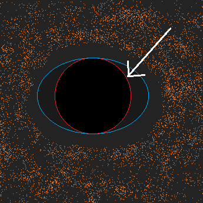
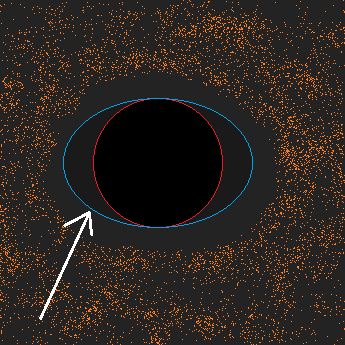
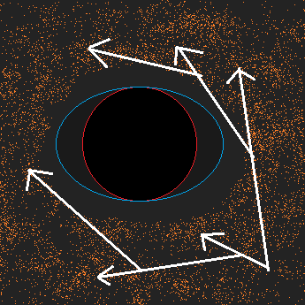

The singularity (Center) is where all the mass of the black hole is. It is an infinitely dense point with infinite gravity; a place where most modern physics break down.
The event horizon (red circle) is the point of no return. Beyond this horizon, escape velocity exceeds the speed of light, and spacetime is bent so far that events cannot be assigned a "when".
The ergosphere (turqouise oval) is another boundary after which physics break down, but only applies to rotating black holes. It is elliptic since it forms around the axis of rotation.
The accretion disk (Orange disk) is debris orbiting the black hole, usually composed of gas. The friction between the particles causes it to heat up and release radiation in the form of X-rays.